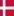
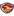
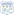
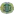
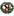

🏆 EURO 2024
| Date | Fixture  Bold-faced team is selected by AIGoalie to win. Bold-faced team is selected by AIGoalie to win. |
Odds Pre-match odds of the selected team winning. Note that odds are fetched once per day at 00:00 GMT, meaning some matches may have live odds. Also odds may not be available for all leagues. |
Win How confident AIGoalie is that the selected team will win. Low confidence indicates unpredictability of the match. ▼ |
Result Whether the selected team won, drew, or lost. |
Over The minimum number of goals predicted by AIGoalie. ⚽ = over 0.5 ⚽⚽ = over 1.5 ⚽⚽⚽ = over 2.5 ... ► |
Alerts Home 🏥 = Considerable injuries 🏥🏥 = Major injuries 📉 = Dip in form Note, you may see injuries when expanding match but no alert here, meaning the model does not consider them important. |
Alerts Away 🏥 = Considerable injuries 🏥🏥 = Major injuries 📉 = Dip in form Note, you may see injuries when expanding match but no alert here, meaning the model does not consider them important. |
|
|---|---|---|---|---|---|---|---|---|
| Sat. 29 Jun. | Switzerland  2:0  Italy Form: DDWL Form: WLDL |
-0.54 vs 0.54 | 2.66 | 51% | ❌ | ⚽ 1.18 |
📉 Home team has a dip in form recently | 📉 Away team has a dip in form recently |
| Sat. 29 Jun. | Germany  2:0  Denmark Form: WDWL Form: DDDL |
0.44 vs -0.45 | 1.66 | 45% | ✓ | ⚽ 1.08 |
📉 Home team has a dip in form recently | 📉 Away team has a dip in form recently |
🏆 Copa América 2024
| Date | Fixture Bold-faced team is selected by AIGoalie to win. |
Odds Pre-match odds of the selected team winning. Note that odds are fetched once per day at 00:00 GMT, meaning some matches may have live odds. Also odds may not be available for all leagues. |
Win How confident AIGoalie is that the selected team will win. Low confidence indicates unpredictability of the match. ▼ |
Result Whether the selected team won, drew, or lost. |
Over The minimum number of goals predicted by AIGoalie. ⚽ = over 0.5 ⚽⚽ = over 1.5 ⚽⚽⚽ = over 2.5 ... ► |
Alerts Home 🏥 = Considerable injuries 🏥🏥 = Major injuries 📉 = Dip in form Note, you may see injuries when expanding match but no alert here, meaning the model does not consider them important. |
Alerts Away 🏥 = Considerable injuries 🏥🏥 = Major injuries 📉 = Dip in form Note, you may see injuries when expanding match but no alert here, meaning the model does not consider them important. |
|
|---|---|---|---|---|---|---|---|---|
| Sat. 29 Jun. | Paraguay  1:4  Brazil Form: WLLL Form: DWDL |
-1.63 vs 0.84 | 1.36 | 64% | ✓ | 😴 0.56 |
🏥 📉 Home team has considerable injuries and a dip in form recently | 📉 Away team has a dip in form recently |
🌍 Global
| Date | Fixture Bold-faced team is selected by AIGoalie to win. |
Odds Pre-match odds of the selected team winning. Note that odds are fetched once per day at 00:00 GMT, meaning some matches may have live odds. |
Win How confident AIGoalie is that the selected team will win. Low confidence indicates unpredictability of the match. ▼ |
Result Whether the selected team won, drew, or lost. |
Over The minimum number of goals predicted by AIGoalie. ⚽ = over 0.5 ⚽⚽ = over 1.5 ⚽⚽⚽ = over 2.5 ... ► |
Alerts Home 🏥 = Considerable injuries 🏥🏥 = Major injuries 📉 = Dip in form Note, you may see injuries when expanding match but no alert here, meaning the model does not consider them important. |
Alerts Away 🏥 = Considerable injuries 🏥🏥 = Major injuries 📉 = Dip in form Note, you may see injuries when expanding match but no alert here, meaning the model does not consider them important. |
|
|---|---|---|---|---|---|---|---|---|
| Sat. 29 Jun. | Tauranga City AFC  0:5  Auckland City FC Form: WDWL Form: WWDW |
-1.93 vs 1.52 | 75% | ✓ | ⚽⚽ 2.83 |
📉 Home team has a dip in form recently | ||
| Sat. 29 Jun. | Gimcheon Sangmu  2:0  Daegu FC Form: WWWD Form: WLLD |
1.24 vs -2.13 | 2.14 | 72% | ✓ | ⚽ 1.46 |
📉 Away team has a dip in form recently | |
| Sat. 29 Jun. | Neman Grodno  2:1  FK Smorgon Form: WLWW Form: LWLD |
1.13 vs -2.02 | 71% | ✓ | ⚽⚽ 2.48 |
📉 Home team has a dip in form recently | 📉 Away team has a dip in form recently | |
| Sat. 29 Jun. | Utsiktens BK  2:3  IK Oddevold Form: LLLL Form: LDLL |
1.09 vs -1.56 | 2.4 | 71% | ❌ | ⚽ 1.48 |
📉 Home team has a dip in form recently | 📉 Away team has a dip in form recently |
| Sat. 29 Jun. | Eastern Suburbs AFC  1:2  East Coast Bays AFC Form: WWLL Form: LWLW |
1.05 vs -1.76 | 70% | ❌ | ⚽ 1.58 |
📉 Home team has a dip in form recently | 📉 Away team has a dip in form recently | |
| Sat. 29 Jun. | JK Trans Narva  1:2  FCI Levadia Form: WLLD Form: WWWW |
-1.42 vs 1.03 | 1.02 | 70% | ✓ | ⚽⚽⚽ 3.1 |
📉 Home team has a dip in form recently | |
| Sat. 29 Jun. | Degerfors IF  4:1  Sandvikens IF Form: DWWL Form: WWWL |
0.98 vs -1.54 | 2.32 | 69% | ✓ | ⚽⚽ 2.54 |
📉 Home team has a dip in form recently | 📉 Away team has a dip in form recently |
| Sat. 29 Jun. | FF Jaro  1:0  JIPPO Joensuu Form: DWWW Form: LDLW |
0.91 vs -1.47 | 66% | ✓ | ⚽ 1.6 |
📉 Away team has a dip in form recently | ||
| Sat. 29 Jun. | CD Universidad Católica  2:2  Santiago Wanderers Form: LWLD Form: WWDD |
0.9 vs -1.53 | 1.15 | 66% | ⁃ | ⚽ 1.82 |
📉 Home team has a dip in form recently | 📉 Away team has a dip in form recently |
| Sat. 29 Jun. | Moca FC  Unknown  Cibao FC Form: WWWW Form: WWDD |
-1.54 vs 0.88 | 65% | 😴 0.94 |
📉 Away team has a dip in form recently | |||
| Sat. 29 Jun. | Paraguay 1:4 Brazil Form: WLLL Form: DWDL |
-1.63 vs 0.84 | 1.36 | 64% | ✓ | 😴 0.56 |
🏥 📉 Home team has considerable injuries and a dip in form recently | 📉 Away team has a dip in form recently |
| Sat. 29 Jun. | Víkingur Gøta  4:0  EB/Streymur Form: WLLW Form: WWWL |
0.83 vs -1.59 | 1.01 | 63% | ✓ | ⚽⚽ 2.82 |
📉 Home team has a dip in form recently | 📉 Away team has a dip in form recently |
| Sat. 29 Jun. | Birkenhead United  2:0  Melville United Form: WDWW Form: WLWW |
0.82 vs -1.66 | 1.82 | 63% | ✓ | ⚽⚽⚽ 3.67 |
📉 Away team has a dip in form recently | |
| Sat. 29 Jun. | B36 Tórshavn  3:0  Skála IF Form: DLWW Form: LLLD |
0.76 vs -1.34 | 1.37 | 60% | ✓ | ⚽⚽ 2.71 |
📉 Home team has a dip in form recently | 📉 Away team has a dip in form recently |
| Sat. 29 Jun. | Shanghai Port  3:1  Zhejiang FC Form: WWWW Form: WWLL |
0.74 vs -1.36 | 1.46 | 60% | ✓ | ⚽⚽⚽ 3.28 |
📉 Away team has a dip in form recently | |
| Sat. 29 Jun. | FC KTP  1:0  Pallokerho-35 Form: LWWD Form: DLLL |
0.71 vs -1.23 | 58% | ✓ | ⚽⚽⚽ 3.06 |
📉 Away team has a dip in form recently | ||
| Sat. 29 Jun. | BATE Borisov  0:2  Dinamo Minsk Form: LWLD Form: WWWW |
-0.99 vs 0.67 | 57% | ✓ | ⚽⚽⚽ 3.62 |
📉 Home team has a dip in form recently | ||
| Sat. 29 Jun. | Switzerland 2:0 Italy Form: DDWL Form: WLDL |
-0.54 vs 0.54 | 2.66 | 51% | ❌ | ⚽ 1.18 |
📉 Home team has a dip in form recently | 📉 Away team has a dip in form recently |
| Sat. 29 Jun. | Coritiba Foot Ball Club  1:1 Vila Nova Futebol Clube (GO) Form: WLDD Form: LWWD |
0.53 vs -1.6 | 51% | ⁃ | ⚽ 1.92 |
🏥 📉 Home team has considerable injuries and a dip in form recently | ||
| Sat. 29 Jun. | Gimpo FC  1:1  Cheonan City Form: WDDD Form: WLDL |
0.52 vs -1.25 | 1.88 | 51% | ⁃ | ⚽ 1.2 |
📉 Home team has a dip in form recently | 📉 Away team has a dip in form recently |
| Sat. 29 Jun. | Turun Palloseura  1:0  SJK Seinäjoki II Form: WWLD Form: LLLL |
0.52 vs -1.25 | 51% | ✓ | ⚽⚽ 2.23 |
📉 Home team has a dip in form recently | 📉 Away team has a dip in form recently | |
| Sat. 29 Jun. | CA Temperley  1:0  CA Brown (Adrogué) Form: WWWD Form: DDLD |
0.5 vs -1.34 | 1.78 | 50% | ✓ | ⚽ 1.58 |
📉 Away team has a dip in form recently | |
| Sat. 29 Jun. | Yokohama F. Marinos  1:2  Tokyo Verdy Form: LLLL Form: WLWD |
0.49 vs -1.08 | 1.98 | 49% | ❌ | ⚽⚽ 2.69 |
📉 Home team has a dip in form recently | 📉 Away team has a dip in form recently |
| Sat. 29 Jun. | Germany 2:0 Denmark Form: WDWL Form: DDDL |
0.44 vs -0.45 | 1.66 | 45% | ✓ | ⚽ 1.08 |
📉 Home team has a dip in form recently | 📉 Away team has a dip in form recently |
| Sat. 29 Jun. | Wuhan Three Towns  1:2  Nantong Zhiyun Form: WLLL Form: LWDW |
0.42 vs -1.15 | 3.65 | 43% | ❌ | ⚽ 1.9 |
📉 Home team has a dip in form recently | |
| Sat. 29 Jun. | Manila Montet FC  0:8  Philippine Air Force FC Form: LLLL Form: LWWW |
-0.99 vs 0.39 | 41% | ✓ | ⚽⚽⚽⚽⚽⚽⚽ 7.8 |
📉 Home team has a dip in form recently | ||
| Sat. 29 Jun. | Club Deportes Iquique  3:1  Deportes Antofagasta Form: WLWW Form: DWWL |
0.38 vs -1.11 | 1.05 | 40% | ✓ | ⚽⚽⚽ 3.0 |
📉 Home team has a dip in form recently | 📉 Away team has a dip in form recently |
| Sat. 29 Jun. | Universidad O&M FC  Unknown  Atlético San Cristóbal Form: DWWD Form: LLWL |
0.38 vs -1.38 | 40% | ⚽⚽ 2.06 |
📉 Away team has a dip in form recently | |||
| Sat. 29 Jun. | Shakhter Soligorsk  1:0  Torpedo-BelAZ Zhodino Form: DWWW Form: WWLW |
-0.87 vs 0.36 | 38% | ❌ | ⚽ 1.44 |
📉 Away team has a dip in form recently | ||
| Sat. 29 Jun. | Guangxi Pingguo Haliao 1:1  Chongqing Tonglianglong Form: DWWD Form: WWLD |
0.35 vs -0.95 | 1.63 | 38% | ⁃ | ⚽ 1.53 |
📉 Away team has a dip in form recently | |
| Sat. 29 Jun. | Gimnasia y Esgrima de Mendoza  1:0  CA Chaco For Ever Form: DWWD Form: DLLL |
0.33 vs -1.12 | 2.06 | 37% | ✓ | ⚽⚽ 2.13 |
📉 Away team has a dip in form recently | |
| Sat. 29 Jun. | Dynamic Herb Cebu FC  4:0  Philippine Army FC Form: WWWL Form: LLWL |
0.3 vs -1.05 | 34% | ✓ | ⚽⚽⚽ 3.17 |
📉 Home team has a dip in form recently | 📉 Away team has a dip in form recently | |
| Sat. 29 Jun. | One Taguig FC  17:0  Don Bosco Garelli United Form: WWWD Form: LLWL |
0.27 vs -0.89 | 1.75 | 32% | ✓ | ⚽⚽⚽⚽⚽⚽ 6.42 |
📉 Away team has a dip in form recently | |
| Sat. 29 Jun. | Vegalta Sendai  3:2 Tochigi SC Form: DDWL Form: WWLL |
0.24 vs -1.11 | 1.76 | 29% | ✓ | ⚽ 1.59 |
📉 Home team has a dip in form recently | 📉 Away team has a dip in form recently |
| Sat. 29 Jun. | Atlético Ottawa  4:3  Forge FC Form: LDWL Form: DWLD |
0.22 vs -0.81 | 1.57 | 28% | ✓ | ⚽ 1.65 |
📉 Home team has a dip in form recently | 📉 Away team has a dip in form recently |
| Sat. 29 Jun. | CA Estudiantes  1:1  CA San Miguel Form: LDDL Form: WWDD |
0.22 vs -0.97 | 2.1 | 28% | ⁃ | 😴 0.62 |
📉 Home team has a dip in form recently | 📉 Away team has a dip in form recently |
| Sat. 29 Jun. | CA Agropecuario  2:4  CA Racing (Córdoba) Form: WLLL Form: DLWW |
0.22 vs -0.98 | 2.04 | 27% | ❌ | ⚽ 1.42 |
📉 Home team has a dip in form recently | 📉 Away team has a dip in form recently |
| Sat. 29 Jun. | Ordabasy Shymkent  2:1  Kaysar Kyzylorda Form: WWWD Form: DWLL |
0.22 vs -1.03 | 27% | ✓ | ⚽ 1.54 |
📉 Away team has a dip in form recently | ||
| Sat. 29 Jun. | FC Hoyvík  1:1  TB Tvøroyri Form: LLWD Form: DWDW |
-0.92 vs 0.21 | 1.23 | 27% | ⁃ | ⚽ 1.42 |
📉 Home team has a dip in form recently | |
| Sat. 29 Jun. | Wuxi Wugo  2:2  Jiangxi Lushan Form: LLWD Form: DLLD |
0.21 vs -1.15 | 26% | ⁃ | ⚽⚽ 2.15 |
📉 Home team has a dip in form recently | 📉 Away team has a dip in form recently | |
| Sat. 29 Jun. | FK Panevezys  0:1  FK Banga Gargzdai Form: LLWL Form: DLWD |
0.2 vs -1.04 | 1.73 | 26% | ❌ | 😴 0.83 |
🏥 📉 Home team has considerable injuries and a dip in form recently | 📉 Away team has a dip in form recently |
| Sat. 29 Jun. | Skanstes SK  3:0  JFK Ventspils Form: LWWW Form: LDLL |
0.18 vs -0.93 | 25% | ✓ | 😴 0.91 |
📉 Away team has a dip in form recently | ||
| Sat. 29 Jun. | Thespa Gunma  1:2  Fujieda MYFC Form: LLLW Form: LLWW |
0.18 vs -1.02 | 3.1 | 24% | ❌ | ⚽ 1.25 |
📉 Home team has a dip in form recently | 📉 Away team has a dip in form recently |
| Sat. 29 Jun. | SJK Seinäjoki  2:1  FC Haka Form: DWWW Form: WLWW |
0.18 vs -0.68 | 1.74 | 24% | ✓ | ⚽⚽ 2.69 |
📉 Away team has a dip in form recently | |
| Sat. 29 Jun. | Charleston Battery  5:2  North Carolina FC Form: LDWW Form: WDLW |
0.17 vs -0.7 | 24% | ✓ | ⚽⚽ 2.01 |
📉 Away team has a dip in form recently | ||
| Sat. 29 Jun. | Busan IPark  2:2  Seongnam FC Form: DLDD Form: LLDL |
0.17 vs -0.87 | 23% | ⁃ | ⚽⚽ 2.1 |
📉 Home team has a dip in form recently | 📉 Away team has a dip in form recently | |
| Sat. 29 Jun. | Comerciantes FC  1:0  Santos FC Nazca Form: DDWD Form: WDLD |
0.16 vs -1.09 | 1.52 | 23% | ✓ | 😴 0.66 |
📉 Home team has a dip in form recently | 📉 Away team has a dip in form recently |
| Sat. 29 Jun. | Bumprom Gomel  0:0  Lokomotiv Gomel Form: WLDW Form: LWDL |
0.14 vs -0.89 | 21% | ⁃ | ⚽ 1.64 |
📉 Home team has a dip in form recently | 📉 Away team has a dip in form recently | |
| Sat. 29 Jun. | CD Cobresal  3:1 Deportes Copiapó Form: LDLW Form: WWDL |
0.14 vs -1.18 | 1.7 | 21% | ✓ | ⚽⚽ 2.56 |
📉 Home team has a dip in form recently | 📉 Away team has a dip in form recently |
| Sat. 29 Jun. | Daejeon Hana Citizen  0:2  Suwon FC Form: WLLD Form: LWWD |
0.13 vs -0.95 | 21% | ❌ | ⚽⚽ 2.06 |
📉 Home team has a dip in form recently | ||
| Sat. 29 Jun. | FC Suduroy  3:2  B36 Tórshavn II Form: DDLW Form: WWLL |
0.13 vs -0.73 | 20% | ✓ | ⚽⚽⚽ 3.1 |
📉 Home team has a dip in form recently | 📉 Away team has a dip in form recently | |
| Sat. 29 Jun. | Ogre United  2:2  FK Smiltene/BJSS Form: WDDL Form: WLDW |
0.11 vs -0.89 | 19% | ⁃ | ⚽⚽ 2.04 |
📉 Home team has a dip in form recently | 📉 Away team has a dip in form recently | |
| Sat. 29 Jun. | CD Cobreloa  0:0  San Marcos de Arica Form: WWDL Form: WWLD |
0.1 vs -0.74 | 1.04 | 18% | ⁃ | ⚽⚽ 2.25 |
📉 Home team has a dip in form recently | 📉 Away team has a dip in form recently |
| Sat. 29 Jun. | FK Eskhata  0:2  FK Khujand Form: LWWW Form: DDDW |
0.1 vs -0.98 | 18% | ❌ | ⚽ 1.36 |
📉 Away team has a dip in form recently | ||
| Sat. 29 Jun. | Qyzyljar Petropavlovsk  2:0  Shakhter Karaganda Form: DLWD Form: LLLW |
0.08 vs -1.16 | 1.62 | 17% | ✓ | 😴 0.81 |
📉 Home team has a dip in form recently | 📉 Away team has a dip in form recently |
| Sat. 29 Jun. | FK Orsha  2:2  Energetik-BGU Minsk Form: WWDW Form: LLDD |
0.03 vs -0.85 | 13% | ⁃ | ⚽ 1.76 |
📉 Away team has a dip in form recently | ||
| Sat. 29 Jun. | Manurewa AFC  1:2  West Coast Rangers Form: DLWL Form: WLLL |
0.03 vs -0.93 | 12% | ❌ | ⚽⚽⚽ 3.15 |
📉 Home team has a dip in form recently | 📉 Away team has a dip in form recently | |
| Sat. 29 Jun. | Iwaki FC  0:4  Yokohama FC Form: WLLL Form: WWWW |
-0.75 vs 0.03 | 2.14 | 12% | ✓ | ⚽ 1.58 |
📉 Home team has a dip in form recently | |
| Sat. 29 Jun. | Atlético Pantoja  Unknown  Atlántico FC Form: LWDW Form: LWWL |
0.02 vs -0.73 | 12% | ⚽ 1.97 |
📉 Away team has a dip in form recently | |||
| Sat. 29 Jun. | Botafogo FC  1:1  Sport Club do Recife Form: WWDL Form: DWDW |
-0.51 vs 0.02 | 2.48 | 11% | ⁃ | ⚽ 1.39 |
📉 Home team has a dip in form recently | |
| Sat. 29 Jun. | Oita Trinita  0:0 Ventforet Kofu Form: LLDW Form: DLDL |
0.01 vs -0.75 | 11% | ⁃ | ⚽ 1.72 |
📉 Home team has a dip in form recently | 📉 Away team has a dip in form recently | |
| Sat. 29 Jun. | Tianjin Jinmen Tiger  3:0 Shenzhen Peng City Form: LWDW Form: WWWL |
0.0 vs -0.63 | 1.02 | 10% | ✓ | ⚽ 1.75 |
🏥 📉 Away team has considerable injuries and a dip in form recently | |
| Sat. 29 Jun. | Academia Deportiva Cantolao  1:2  Ayacucho FC Form: LDLL Form: DWDL |
-0.01 vs -0.68 | 10% | ❌ | ⚽ 1.22 |
📉 Home team has a dip in form recently | 📉 Away team has a dip in form recently | |
| Sat. 29 Jun. | Atlético Vega Real  Unknown  Delfines del Este FC Form: DDWD Form: LWDW |
-0.02 vs -0.76 | 1.01 | 10% | 😴 0.88 |
📉 Home team has a dip in form recently | ||
| Sat. 29 Jun. | Guangzhou FC  1:1  Nanjing City Form: WLDD Form: DWWD |
-0.02 vs -0.95 | 10% | ⁃ | ⚽ 1.58 |
📉 Home team has a dip in form recently | ||
| Sat. 29 Jun. | FC Nomme United  1:1  FC Flora Tallinn Form: DLDL Form: DWDL |
-0.61 vs -0.03 | 9% | ⁃ | ⚽⚽ 2.82 |
📉 Home team has a dip in form recently | 📉 Away team has a dip in form recently | |
| Sat. 29 Jun. | Jeonbuk Hyundai Motors  1:5  FC Seoul Form: LDLD Form: WWWL |
-0.05 vs -0.73 | 2.62 | 9% | ❌ | ⚽⚽ 2.25 |
📉 Home team has a dip in form recently | 📉 Away team has a dip in form recently |
| Sat. 29 Jun. | New York City FC  4:2  Orlando City SC Form: LWWL Form: WLWW |
-0.06 vs -0.45 | 1.92 | 9% | ✓ | ⚽ 1.29 |
📉 Home team has a dip in form recently | 📉 Away team has a dip in form recently |
| Sat. 29 Jun. | Mito HollyHock  1:1  Renofa Yamaguchi Form: WLDL Form: WLDW |
-0.07 vs -0.72 | 3.05 | 9% | ⁃ | ⚽ 1.25 |
📉 Home team has a dip in form recently | 📉 Away team has a dip in form recently |
| Sat. 29 Jun. | Suzhou Dongwu  1:0  Shijiazhuang Gongfu Form: WWLW Form: LDLL |
-0.09 vs -0.54 | 3.6 | 8% | ✓ | ⚽ 1.55 |
📉 Home team has a dip in form recently | 📉 Away team has a dip in form recently |
| Sat. 29 Jun. | Roasso Kumamoto  4:0 Ehime FC Form: LLWL Form: WWLL |
-0.1 vs -0.49 | 2.02 | 8% | ✓ | ⚽⚽ 2.6 |
📉 Home team has a dip in form recently | 📉 Away team has a dip in form recently |
| Sat. 29 Jun. | Kawasaki Frontale  1:1  Sanfrecce Hiroshima Form: DDDD Form: WDDL |
-0.16 vs -0.65 | 3.4 | 7% | ⁃ | ⚽⚽ 2.71 |
🏥 📉 Home team has considerable injuries and a dip in form recently | 📉 Away team has a dip in form recently |
| Sat. 29 Jun. | FC Astana  1:3  Kairat Almaty Form: LWLW Form: WLWD |
-0.17 vs -0.56 | 2.04 | 7% | ❌ | ⚽ 1.61 |
📉 Home team has a dip in form recently | 📉 Away team has a dip in form recently |
| Sat. 29 Jun. | FC Lahti  2:2  Ilves Tampere Form: WDLD Form: LDDW |
-0.17 vs -0.33 | 7% | ⁃ | ⚽⚽ 2.49 |
📉 Home team has a dip in form recently | 📉 Away team has a dip in form recently | |
| Sat. 29 Jun. | Memphis 901 FC  5:1  Phoenix Rising FC Form: DWWL Form: DDLL |
-0.52 vs -0.19 | 2.66 | 6% | ❌ | ⚽⚽ 2.04 |
📉 Home team has a dip in form recently | 📉 Away team has a dip in form recently |
| Sat. 29 Jun. | GIF Sundsvall  1:3  Örebro SK Form: LDLL Form: DLDW |
-0.19 vs -0.6 | 2.9 | 6% | ❌ | ⚽ 1.97 |
📉 Home team has a dip in form recently | 📉 Away team has a dip in form recently |
| Sat. 29 Jun. | FK Slonim 2017  2:2  FK Lida Form: WLDL Form: WLDL |
-0.35 vs -0.2 | 6% | ⁃ | ⚽ 1.77 |
📉 Home team has a dip in form recently | 📉 Away team has a dip in form recently | |
| Sat. 29 Jun. | CA All Boys  1:0  CA Patronato Form: WLWL Form: DWLW |
-0.2 vs -0.75 | 2.16 | 6% | ✓ | 😴 0.68 |
📉 Home team has a dip in form recently | 📉 Away team has a dip in form recently |
| Sat. 29 Jun. | Tokushima Vortis  2:2  V-Varen Nagasaki Form: LWDW Form: WWDW |
-0.49 vs -0.2 | 2.2 | 6% | ⁃ | ⚽ 1.82 |
||
| Sat. 29 Jun. | Mendiola FC 1991  4:2  Tuloy FC Form: WLWW Form: WWLW |
-0.22 vs -0.23 | 6% | ✓ | ⚽⚽⚽⚽ 4.23 |
📉 Home team has a dip in form recently | 📉 Away team has a dip in form recently | |
| Sat. 29 Jun. | Niva Dolbizno  0:0  FK Molodechno Form: WWDD Form: LWDW |
-0.23 vs -0.35 | 5% | ⁃ | ⚽⚽ 2.62 |
📉 Home team has a dip in form recently | ||
| Sat. 29 Jun. | FK Kuktosh  0:0  Khosilot Farkhor Form: LLLL Form: DDDW |
-0.25 vs -0.5 | 5% | ⁃ | ⚽ 1.72 |
📉 Home team has a dip in form recently | 📉 Away team has a dip in form recently | |
| Sat. 29 Jun. | Clube de Regatas Vasco da Gama  1:1  Botafogo de Futebol e Regatas Form: LDWW Form: WDWW |
-0.33 vs -0.73 | 3% | ⁃ | ⚽⚽ 2.49 |
🏥🏥 Away team has MAJOR injuries | ||
| Sat. 29 Jun. | Cuiabá Esporte Clube (MT)  1:1  Red Bull Bragantino Form: DDLD Form: LDWL |
-0.34 vs -0.39 | 3% | ⁃ | ⚽ 1.98 |
📉 Home team has a dip in form recently | 📉 Away team has a dip in form recently | |
| Sat. 29 Jun. | Hokkaido Consadole Sapporo  0:1  Albirex Niigata Form: LLLL Form: DDWL |
-0.56 vs -0.39 | 2.32 | 2% | ✓ | ⚽⚽ 2.31 |
🏥🏥 📉 Home team has MAJOR injuries and a dip in form recently | 📉 Away team has a dip in form recently |
Last updated 08:28:35 2024-07-09
Privacy Policy - 18+. Gamble Responsibly. - Terms